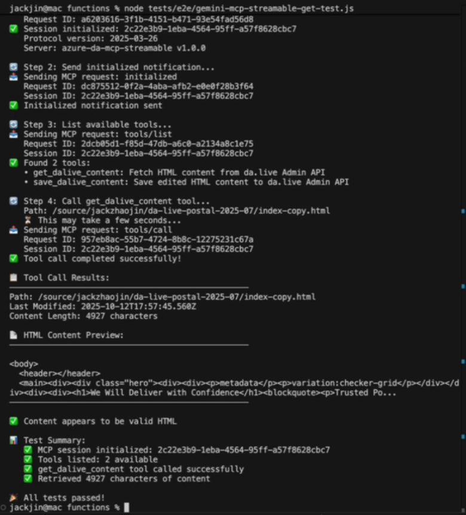
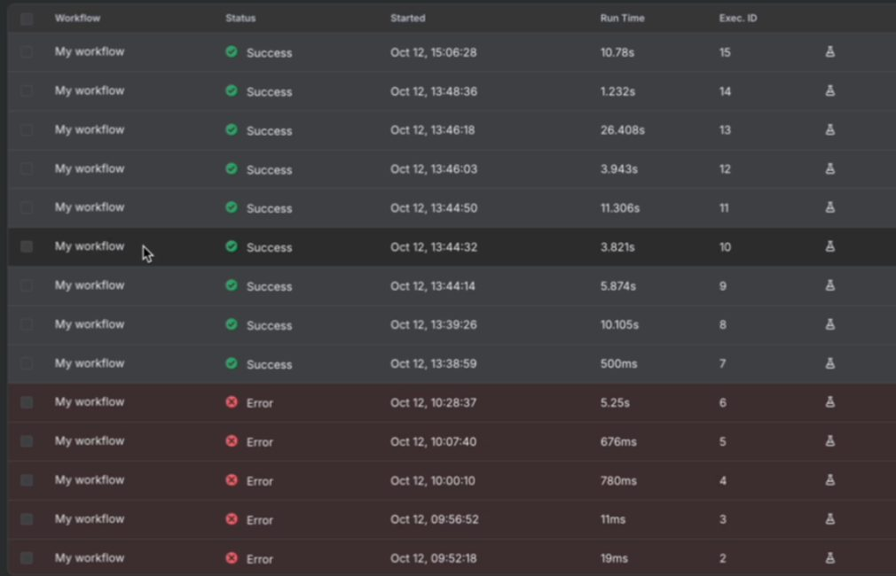
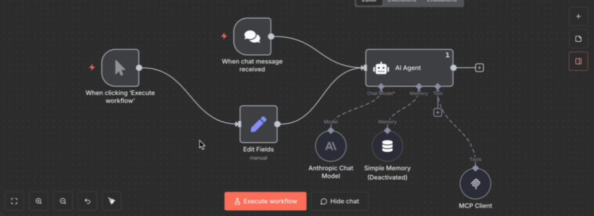
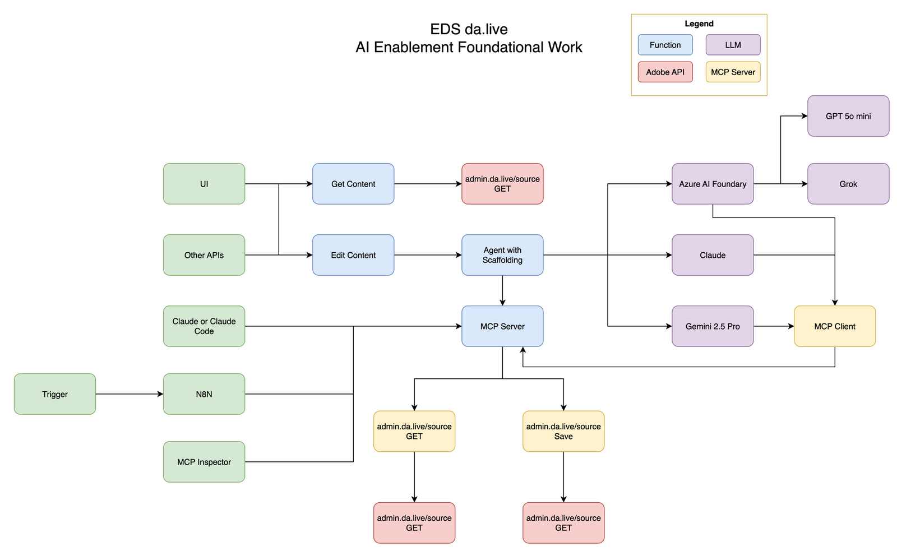

First published as a LinkedIn video on October 12, 2025. Rewritten for this site in October 2026. Code: azure-da-mcp at 5c7549b, the last commit before I recorded.
What changed since I wrote this
This server didn't stay on Azure Functions or stay this small. The same repo grew into the Content Factory. Its v2.0, in June 2026, rebuilt it as four agents on Cloudflare Workers and Containers, and that work became my adaptTo() 2026 talk. The two patterns at the end of this article are still how I explain the choice.
One MCP server, three model families
Part one built a basic MCP server for da.live: two tools, get content and save content, used from Claude Desktop. The next question is how MCP servers and MCP clients hold up across different models. What if we use Gemini 2.5 Pro? How does this work in a multi-model ecosystem like Azure AI Foundry?
In Azure AI Foundry you can choose which model you deploy, GPT or Grok or any number of others. I deployed GPT-5 mini, the repo's default, and Grok for fast reasoning. One integration can work with all of them. That's very powerful. In reality I probably wouldn't run three providers. This was for learning.
The testing went up a ladder for each provider. First something very simple: write me a haiku, and make sure that passes. Then: can you get the page through the MCP server? The repo has that ladder per provider, claude-haiku.test.js and claude-mcp-get-test.js and the same pair for Gemini and Azure, plus a third rung added later in the weekend for the n8n endpoint.

The big learning: the architecture is not as clean as I imagined. I had trouble getting all three to use the same MCP binding while holding the same agent-level scaffolding. So I ended up moving a decent amount of logic into the purple boxes on my diagram, the three model clients, more than I wanted to. Each client declares the two tools again in its provider's own format, reads the model's tool request its own way, and sends the result back its own way. Here's that difference for one tool:
Claude ClaudeClient.js
1. Declare the toollines 44 to 58
{ name: "get_dalive_content",
description: "Fetch HTML content from da.live. ...",
input_schema: { type: "object",
properties: { path: { type: "string" } },
required: ["path"] } }2. The model asksa content block
{ type: "tool_use", id: "toolu_...",
name: "get_dalive_content",
input: { path: "/source/jackzhaojin/da-live-postal-2025-07/index-copy.html" } }3. The client reads itlines 154 to 160
const toolInput = toolUseBlock.input;
toolInput = {"path":"/source/jackzhaojin/da-live-postal-2025-07/index-copy.html"}4. The result goes backlines 202 to 218
{ role: "user", content: [{
type: "tool_result",
tool_use_id: "toolu_...",
content: JSON.stringify(toolResult) }] }Gemini 2.5 Pro GeminiClient.js
1. Declare the toollines 40 to 57
{ functionDeclarations: [{
name: "get_dalive_content",
description: "Fetch HTML content from da.live. ...",
parameters: { type: "object",
properties: { path: { type: "string" } },
required: ["path"] } }] }2. The model asksresponse.functionCalls()
{ name: "get_dalive_content",
args: { path: "/source/jackzhaojin/da-live-postal-2025-07/index-copy.html" } }3. The client reads itlines 148 to 154
const functionArgs = functionCall.args;
toolInput = {"path":"/source/jackzhaojin/da-live-postal-2025-07/index-copy.html"}4. The result goes backlines 197 to 202
[{ functionResponse: {
name: "get_dalive_content",
response: toolResult } }]One more Gemini quirk in the same file: its final answer can come back wrapped in a markdown code fence, so the client strips ```json before it parses the JSON.
Azure OpenAI AzureAIFoundryClient.js
1. Declare the toollines 52 to 68
{ type: "function",
function: {
name: "get_dalive_content",
description: "Fetch HTML content from da.live. ...",
parameters: { type: "object",
properties: { path: { type: "string" } },
required: ["path"] } } }2. The model asksmessage.tool_calls[0]
{ id: "call_...", type: "function",
function: { name: "get_dalive_content",
arguments: "{\"path\":\"/source/jackzhaojin/da-live-postal-2025-07/index-copy.html\"}" } }3. The client reads itlines 163 to 166
const toolInput = JSON.parse(toolCall.function.arguments);
toolInput = {"path":"/source/jackzhaojin/da-live-postal-2025-07/index-copy.html"}4. The result goes backlines 209 to 220
{ role: "tool",
tool_call_id: "call_...",
content: JSON.stringify(toolResult) }Here the arguments arrive as a JSON string, not an object, so this is the only client that has to parse them.
Each client is its own file of 400 to 460 lines, where a week earlier one client covered Claude. And the hand-written copies had already drifted from the server: the clients describe the path with an example like /products/enterprise, while the server's own schema asks for /source/{owner}/{site}/.... There are definitely opportunities to move that logic back into the server once I understand all of this better.
Watch this part0:47 One MCP server, three model families1:26 The architecture isn't as clean as I imagined1:57 Testing each provider: haiku first, then MCP
Deploying to Azure Functions with GitHub Actions and OIDC
The second piece was getting it all running in the cloud. This was fairly straightforward, and lower effort than I was expecting. Azure did quite a few improvements since the last time I did this.
The one I noticed most was the OpenID Connect connection between GitHub Actions and Azure Functions. Azure set it up with proper permissions: the app registration that GitHub signs in as is mapped to OpenID Connect and holds a Website Contributor role on the function app. The workflow it generated has no publish profile and no password. The deploy job asks GitHub for a short-lived token and signs in to Azure with three IDs:
needs: build
permissions:
id-token: write #This is required for requesting the JWT
contents: read #This is required for actions/checkout
# … download and unzip steps trimmed - name: Login to Azure
uses: azure/login@v2
with:
client-id: ${{ secrets.AZUREAPPSERVICE_CLIENTID_19A7A8F3C18E431E85F0975B90EE3DAE }}
tenant-id: ${{ secrets.AZUREAPPSERVICE_TENANTID_78D8217C65894F8D9EEAAE181F051DDE }}
subscription-id: ${{ secrets.AZUREAPPSERVICE_SUBSCRIPTIONID_53A39FBF23AD43FD912DB77E47CC3693 }}
- name: 'Run Azure Functions Action'
uses: Azure/functions-action@v1
id: fa
with:
app-name: 'jack-mcp-azure-ai-function'
slot-name: 'Production'
package: ${{ env.AZURE_FUNCTIONAPP_PACKAGE_PATH }}
One gap in that file: the test step is commented out, because the end-to-end tests need a da.live bearer token and an Anthropic key, and I hadn't added them as repo secrets. So the cloud deploy builds and ships, and I ran the tests by hand.
Watch this part3:07 Deploying to Azure Functions with OpenID Connect
Plugging the server into n8n
With everything on Azure, the third step was to make the diagram bigger on the left side. The MCP server already had Claude Desktop and Claude Code talking to it. Next: can n8n drive it? It worked fairly well. It took me a few tries.

Part of the learning is that MCP comes in different transport flavors. There's the older one, HTTP with server-sent events (SSE), and the newer one, Streamable HTTP; the 2025-03-26 version of the spec made Streamable HTTP the replacement. Those who mess with serverless functions enough will know serverless functions definitely prefer the non-SSE version. You want to be able to drop your connection. So I added a second endpoint, /api/mcp-streamable, for n8n and the MCP Inspector, next to the original /api/mcp that Claude Desktop uses through its bridge.
Two details from that day are in the repo. n8n ran in Docker on my laptop, and inside a container localhost means the container, so n8n has to reach the function at host.docker.internal:7071; the README calls that out in capital letters. The other is sessions. The new endpoint keeps sessions in memory, so it falls back to the bearer token when it can't find the session:
async function handleToolsCall(sessionId, params, id, bearerToken, context) { // Try to get session, but allow Bearer token fallback let session = null; if (sessionId && sessions.has(sessionId)) { session = sessions.get(sessionId); } // If no session but we have a bearer token, create a temporary session context if (!session && bearerToken) { Logger.info('MCP Streamable tool call without session, using Bearer token', { hasBearer: !!bearerToken }, context); session = { bearerToken, sessionId: 'temp-' + Date.now() }; } // If still no session or bearer token, reject if (!session || !session.bearerToken) {Here's how that plays out. Pick an endpoint and a request and see what each one answers:
HTTP 200 OK
Static example: a tool call to /api/mcp-streamable with a session ID this instance has never seen, and a bearer token in the header. With JavaScript on, change any of the four inputs.
{
"jsonrpc": "2.0",
"result": { "content": [ ... the page ... ] },
"id": 1
}One quirk shows up when you play with it: on the n8n endpoint, a session from another instance still gets a tool call through on the token, but the same session is refused a tool list. That's the relaxed validation I added for compatibility. It isn't consistent yet.
From there I could chat with it in n8n, run it as a batch, and watch the content save, the same as from Claude Desktop. This is very important, because the trigger on the left of that workflow could be literally anything. n8n has a long list of triggers, so now we're automating content work without writing code, with the model doing the content in a very low-code way.

Watch this part4:16 Plugging the server into n8n5:04 SSE vs Streamable HTTP on serverless5:27 n8n triggers: content work without code
Two patterns for AI integration
The final learning from that weekend came from watching the patterns in AI architecture. Here's the board as it ended up:


The first pattern is the more traditional one. UIs and APIs trigger an endpoint, and that endpoint carries the scaffolding. Scaffolding is your context engineering: how you make sure every action stays consistent, so you get the content you're actually looking for. That's still very valuable, very valid and important to know. I dug my context engineering notes back up to get it working consistently.
The second pattern is very popular these days: the MCP server. You put the effort into the server, and everything else becomes plug and play, with any number of agent builders that support MCP servers, which is almost all of them, and whatever triggers they offer. That really expands what can be built.
Watch this part6:05 Two patterns for AI integration
What I took away
By the end of that weekend, one MCP server that reads and saves da.live content could be driven from Claude Desktop, from n8n, or from my own endpoint on three model families, without rewriting the integration for each one. Three learnings:
- MCP servers aren't as architecture-clean as I expected. Different clients have different scaffolding needs, and more logic ended up in the model clients than I wanted.
- Azure deployment is easier than ever. OpenID Connect with GitHub Actions and the improved Azure Functions experience made it smooth.
- There are two valid patterns: a traditional UI or API with context engineering, or an MCP server with plug-and-play agent builders.
The limits: three providers was for learning, not something I'd run in production. Sessions live in one instance's memory, which is why the n8n endpoint leans on the bearer token. The token itself is still copied from the browser. And the cloud build ships without running the tests.
The next thing I wanted was to stop poking at it by hand and start measuring it, which is where the Content Factory picks up. If you've run one MCP server across several model providers, I'd like to know: did you keep a client per provider, or find a way to keep that logic in the server?